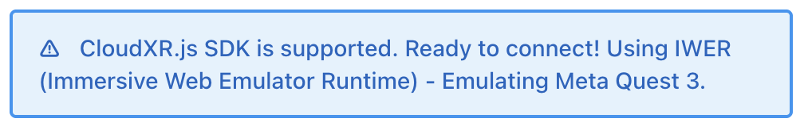
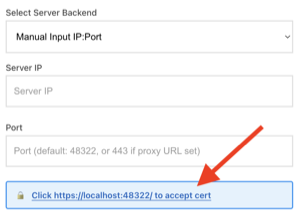
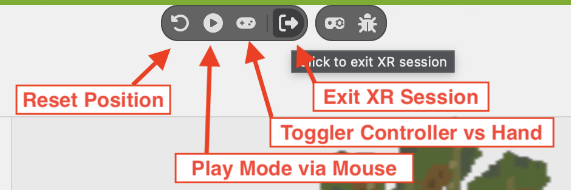

This guide walks you through setting up and running the CloudXR.js generic client to connect to your Omniverse Kit application for spatial streaming on supported XR headsets (Meta Quest 3 or Pico 4 Ultra).
After setting up your Omniverse Kit 109+ application with the built-in CloudXR 6 (WebRTC) runtime (as detailed in the Setup Omniverse Kit SDK guide), you can build and host the web server for the CloudXR.js client application.
This guide uses the simple WebGL example client. For detailed technical implementation details, refer to the Sample Client - WebGL documentation.
cd simple
# For this early access release, install the SDK from the provided tarball
# This step will not be required when the SDK is publicly accessible
npm install /path/to/nvidia-cloudxr-6.0.1-beta.tgz
# Install remaining dependencies
npm install
npm run build
Select the appropriate server mode based on your deployment requirements:
For local development (HTTP):
npm run dev-server
http://localhost:8080/http://<server-ip>:8080/ws:// (direct) and wss:// (proxied) runtime connectionsFor local development or production (HTTPS):
npm run dev-server:https
https://localhost:8080/https://<server-ip>:8080/Note: When using HTTPS mode, you must configure a WebSocket proxy. Browsers enforce mixed content policies that block insecure
ws://connections from HTTPS pages. See Networking Setup - WebSocket Proxy for proxy configuration example.
For local development, our web app automatically loads IWER (Immersive Web Emulator Runtime) to emulate an XR headset when no physical XR device is detected.
Make sure you have:
Ensure your Omniverse Kit application is running with CloudXR enabled
CloudXR 6 (WebRTC) selected in the OpenXR Runtime dropdownStart XR to activate the CloudXR streamingNavigate to the web application based on your chosen hosting mode:
http://localhost:8080/https://localhost:8080/
Make sure you see the following messaging, indicating IWER is loaded

(HTTPS mode only) Fill in the Proxy URL if you have any, or click to accept the cert

Click CONNECT
If successful, you should see the green CONNECT button change to CONNECT (STREAMING), and the streamed content from your Omniverse application will appear in your browser!
You could use the develop UI from IWER to emulate device position and input, for example:

Once you've validated the setup works locally, you can test with an actual XR headset.
Supported Headsets:
Configure Headset: Follow the Client Setup Guide for your headset:
npm run dev-server)npm run dev-server:https)npm run dev-server:https)Configure Network: Ensure required ports are open:
Navigate to the web application on your headset browser:
http://<server-ip>:8080/https://<server-ip>:8080/Configure server connection in the web application:
Grant permissions:
CONNECTBefore connecting, verify your Omniverse Kit server is ready:
CloudXR 6 (WebRTC) from the OpenXR Runtime dropdownStop XR button)Configure the following settings in the client web page before clicking CONNECT:
For detailed configuration options, refer to the Sample Client - WebGL documentation.
Required Settings:
49100 (or proxy port if using WSS)AR for Omniverse spatial streamingAdjust based on your network capabilities and quality requirements:
perEyeWidth and perEyeHeight (must be multiples of 16)Fine-tune spatial positioning for your specific scene:
| Setting | Options | Use Case |
|---|---|---|
| Preferred Reference Space | local or bounded-floor |
Room-scale vs. larger spaces |
| X Offset (cm) | Adjustable (default: 0) |
Horizontal positioning |
| Y Offset (cm) | Adjustable | Vertical viewing height |
| Z Offset (cm) | Adjustable | Viewing distance (depth) |
Note: Optimal offset values depend on your USD scene content. For product configurators (e.g., purse example), position objects at a comfortable arm's length. For architectural scenes, adjust Y offset to match floor height.
Troubleshooting Omniverse Spatial Streaming using CloudXR.js